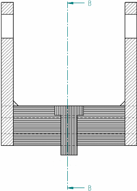

Formatting fill and hatch patterns in section views
When you place a section view, you can use the Section View command bar to select a fill style to define the pattern displayed in the sectioned areas of the part. You also can specify the spacing and angle of the fill area when you place the section view.
After the view is created, you can change the fill style, hatch spacing, and hatch angle on cut faces using options on the Display tab (Drawing View Properties dialog box). You can do this for one or more parts selected in the Parts list on the Display tab.

You also can control hatching on cut ribs in a section view, and you can use the Draw In View command to edit the individual hatch lines. See Modifying section views to learn about these options.
If you want more control over the properties of the fill pattern, you can create a new hatch style, and then use the hatch style to define a new fill style. Hatch styles enable you to define color, line width, spacing, and angle properties to apply to a pattern. You can use the following options on the Edge Display tab (Solid Edge Options dialog box) to select the fill style to apply to newly created section views, and to specify whether the hatching on individual parts can be different from the default style:
-
Show Fill style in section view
-
Derive from part
-
Automatically alternate hatch spacing in section views
-
Automatically alternate hatch angle in section views
How do I
Create a section viewCreate a revolved section view
Create a thin-section view
Change section view type
Scale a section view
Set rib hatching in section views
Show or hide cutting plane lines in section views
Learn more
Section viewsModifying section views
Section view and cutting plane captions
Look up more details
Section View command (Draft environment)Section View command bar
Override Rib Hatching dialog box